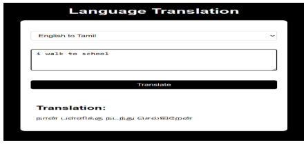
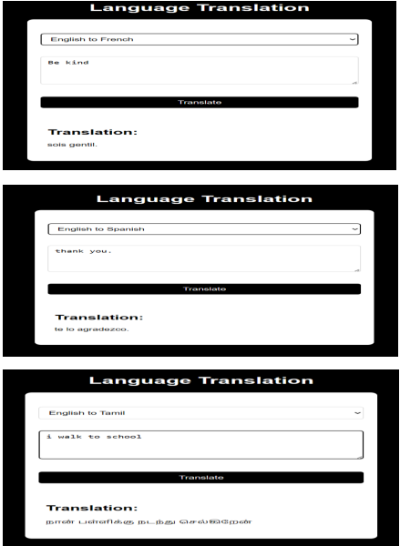

Multilingual Translation System Using Deep Learning

Objective: Develop a language translation application to translate English text into French, Tamil, and Spanish, providing a user-friendly interface for seamless communication across different languages.
Key Components:
- Data Collection: Obtain parallel text datasets from http://www.manythings.org/anki/ for English-French, English-Tamil, and English-Spanish language pairs.
- Data Preprocessing: Tokenize the text into characters, create one-hot encodings for each character, and pad sequences to a fixed length to prepare the data for model training.
- Model Architecture: Utilize an LSTM-based sequence-to-sequence model for each language pair to capture the sequential nature of language and improve translation accuracy.
- Hyperparameter Optimization: Optimize hyperparameters such as learning rate and batch size to enhance translation accuracy and efficiency during the training process.
- GUI Development: Develop a user-friendly GUI using Flask and HTML/CSS, allowing users to input text or voice and select the target language for translation.
- Integration and Testing: Integrate the trained models into the Flask web application and perform extensive testing to ensure proper functionality and accurate translations in various input scenarios.
Results: The project successfully developed a language translation application that provides accurate translations from English to French, Tamil, and Spanish. The user-friendly interface enhances the overall user experience and facilitates communication across different language communities.

Impact: The application has practical implications for language students, researchers, and individuals seeking to communicate effectively across language barriers. It showcases the practical application of machine translation technology in real-world scenarios.
Future Enhancements: Future enhancements could focus on improving translation quality for complex sentence structures and idiomatic expressions, as well as expanding language support to include more languages.